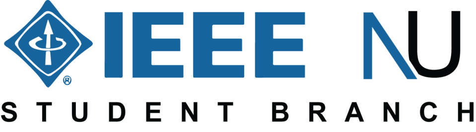
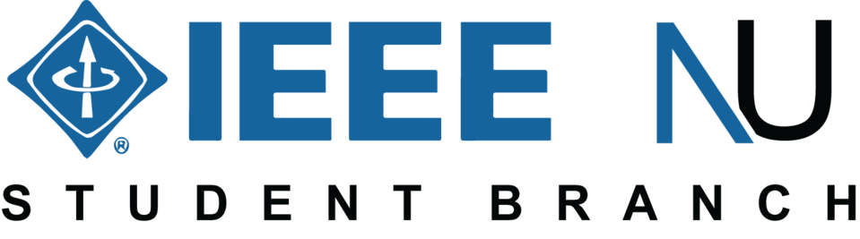

IEEE Student Branch Nirma University
IEEE, the Institute Of Electrical and Electronics Engineers, is a premier technical and world's leading professional institution. IEEE stands for advancement of technology for the benefit of humanity, at the same time bringing members access to the industry's most essential technical information, networking opportunities, career development tools, and many other exclusive benefits. Providing students with an opportunity to interact with academicians and professionals, so as to benefit from their knowledge.
Welcome to Nirma University IEEE Student Branch a dynamic hub for students passionate about engineering and technology! As an integral part of the global Institute of Electrical and Electronics Engineers (IEEE) community, we are dedicated to fostering a vibrant environment for academic and professional growth. Our mission is to inspire and empower students by providing access to cutting-edge knowledge, industry insights, and valuable networking opportunities. Through engaging events such as technical talks, workshops, and conferences, we aim to bridge the gap between academia and industry, preparing our members for successful careers in their chosen fields. Whether you are a seasoned engineering enthusiast or just beginning your academic journey, Nirma University IEEE Student Branch offers a supportive community where you can develop your skills, connect with like-minded peers, and make a meaningful impact. Join us in exploring the exciting world of electrical and electronics engineering together, we're building the future!
REGISTER